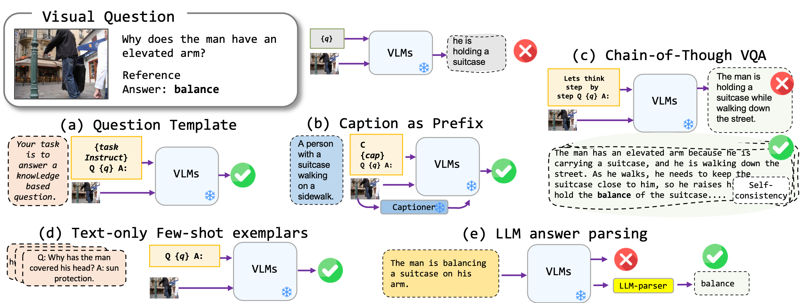

This codebase contains the code for the paper Investigating Prompting Techniques for Zero- and Few-Shot Visual Question Answering.
We have a list of prompt templates that can be used with different VQA formats. Please check the prompts/templates/{dataset_name} for the list of templates.

dataset/ folder.dataset/ folder.dataset/ folder.python3 main_v2.py --dataset_name okvqa --model_name blip2_t5_flant5xxl --vqa_format basic_qa --prompt_name prefix_your_task_knowledge_qa_short_answer python3 main_v2.py --dataset_name okvqa --model_name blip2_t5_flant5xxl --vqa_format caption_qa --prompt_name prefix_your_task_knowledge_qa_short_answer,prefix_promptcap python3 main_v2.py --dataset_name okvqa --model_name blip2_t5_flant5xxl --vqa_format cot_qa --prompt_name prefix_think_step_by_step_rationale
@article{awal2023investigating,
title={Investigating Prompting Techniques for Zero-and Few-Shot Visual Question Answering},
author={Awal, Rabiul and Zhang, Le and Agrawal, Aishwarya},
journal={arXiv preprint arXiv:2306.09996},
year={2023}
}